1. Some Ramblings
I am ashamed to say that the previous post of DrySister is more than a year old. During this period, many friends have privately messaged me saying it was well written and asked when it would be updated. I basically replied that it was discontinued... There were various specific reasons. Recently I have been relatively free, so I want to finish the first edition. When I first started writing it wasAS 2.1.2, and now it's alreadyAS 3.0.1now, the content of this section is as follows:
- Step 1: Review what was covered in the previous sections
- Step 2: The code needs some adjustments to run on AS 3.0.1
- Step 3: Write a log class
Next section, we will talk about signing, obfuscation, and publishing to the app market~ Without further ado, let's start this section!
2. Code Review
- Section 1: Project Setup and Simple Implementation
- 1. Git-related operations
- 2. A simple image loading class (get network stream -> convert to image -> Handler updates UI)
- Section 2: Parsing Backend Data
- 1. Use Android's built-in crude JSON parser to parse the JSON data returned by the backend (JSON string -> List<Bean>)
- 2. Use AsyncTask to make asynchronous network requests
- Section 3: Image Loading Optimization (Write a Small Image Caching Framework)
- 1. The basic approach to image caching

- 2. Usesampling compression methodto compress Bitmap and avoid OOM
- 3. Thread pool manages multiple image loading threads
- 4. Handler updates UI
- 5. Convert String (here URL) to MD5
- 6. Memory cache classLruCachethe use of
- 7. Disk cache classDiskLruCachethe use of
- 8. Logical design of the entire asynchronous image loading and caching
- 1. The basic approach to image caching
- Section 4: Adding Data Cache (Introducing SQLite)
- 1. Determining network status
- 2. Customize SQLiteOpenHelper to create the database
- 3. Database-related operations: CRUD, transactions, pagination, etc.
The above is the content of the previous four sections. The important knowledge points in Android basic introduction have been applied. If you have mastered them all, you can barely be considered to have entered the Android field. The road ahead is still long!
3. Code Adjustments
After switching to AS 3.0, the code in the following files needs to be changed. As usual, let's run the branch switching command:git checkout -b fixcodeas3.0.1, then start modifying the code:
Project-levelbuild.gradle：
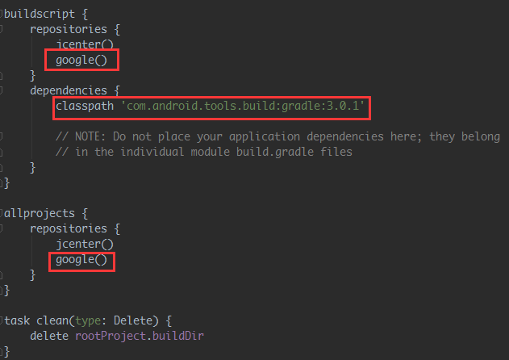
APP-levelbuild.gradle：
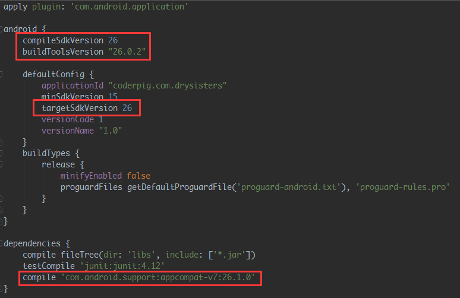
gradle-wrapper.properties：
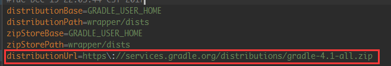
There is also a place that needs a small change:SisterApi.java, change"福利"to:%e7%a6%8f%e5%88%a9This involves the issue of Chinese character transcoding. HttpUrlConnection cannot open links containing Chinese characters. You need to call on the Chinese partURLEncoder.encode(Chinese part, "utf-8");to transcode. Remember,only the Chinese part, not the entire URL!!! Transcoding also requires catching exceptions. Since there is only one place that needs transcoding, I directly used the online transcoding tool to transcode:https://c.runoob.com/front-end/695
The converted result:

In addition, there are some small changes.buildToolsVersion 26 or above，findViewById does not need to be cast, you will know by clicking into the method. It uses generics, so remove all the findViewById:
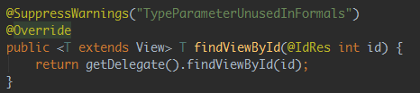
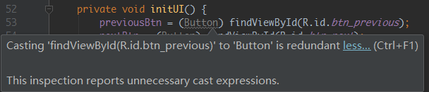
Finally, I felt the effect on my Meilan E2 was a bit off, so I slightly adjusted the page layout to make the image width fill the screen and the height self-adaptive. The attribute used here isandroid:adjustViewBounds = "true", that is, scale width and height proportionally; also put the previous/next step text intostrings.xmlthe file, and slightly adjust the margins:
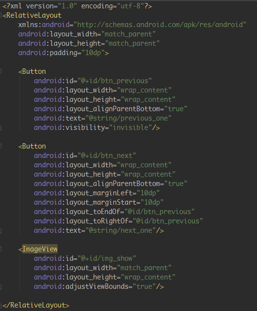
Finally, let's look at the running result of our project: (tsk tsk, good-looking girls are pleasing to the eye):
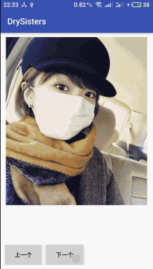
Then merge this branch into the develop branch. Here we don't use the previous merge routine, but use rebase to merge. The specific process is as follows:
git add . git commit -m "fix code in as3.0" git checkout develop # 切换到develop分支 git rebase fix_code_as3.0.1 # 合并分支 git push origin develop # 推送develop到远程分支 git branch -d fix_code_as3.0.1 # 删除合并后的本地分支
If you still don't understand Git, you can go to another article to learn. I won't explain more here:Little Pig's Git Usage Summary
4. Writing a Log Utility Class and a Crash Log Collection Class
I believe every developer is familiar with using Log to print logs. It is indispensable for daily debugging. When the app is packaged and given to testers for testing, and the testers report that the app crashes, the first thing we think of is asking them to provide logs. Speaking of logging, many students like to casually use Log.e(xxx,xxx). All logs are at Error level. The basic reason is:Red is more eye-catching.Haha! Then they just print the variable value, or add it in a method to verify whether the method is executed, etc. If you remember to delete it when officially releasing, it's fine; if you forget to delete it, it's asking for trouble. Anyway, I was once scolded by the big shot at my previous company, and I still remember it vividly! Log management is very important. The two utility classes we want to write are as follows:
- 1. Logs are printed normally during debug, and not printed in release.
- 2.Crash log collection, it doesn't matter if you test it yourself or let testers test it. When a crash occurs, you can directly connect the phone to your computer and check logcat to see everything clearly. But if the app is installed on the user's phone and the app crashes and stops running, the user won't send the log to you. Multiple crashes may even cause the user to uninstall your app. So we need to save the log when the app crashes, and when the user connects to Wi-Fi or opens the app again, upload this log to our server. Here we are just writing it for fun, so we only dolocal crash log collection, generally, log collection is done by integrating third-party statistical tools, such as Umeng, Bugly, etc.
Okay, the requirements are the above two points. Next, we are ready to start writing code. But before writing code, let's do a little popularization about two points regarding Log. Most of you may already know them. If you know, you can skip directly:
1) Quickly Print Log
Open Settings and click in order:Live Templates -> AndroidLogCheck all the log printing options. You can also write templates in the Template text below~

Then just type the above log... in any code, press Enter, and the Log statement appears. The TAG is directly your current method name~
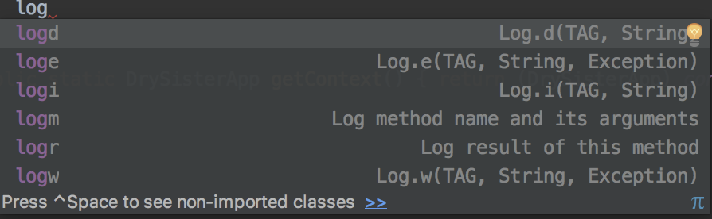
2. A Primer on Using Log
1) Quickly print Log print command
Open Settings, click in order:Live Templates -> AndroidLogCheck all the log printing options. You can also write templates in the Template text below~

Then just type the above log... in any code, press Enter, and the Log statement appears~
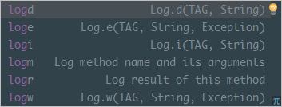
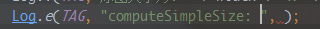
If you are outside a method, typing logt can directly generate a TAG with the corresponding class name:


2) Primer on Log levels
In the past, when the team leader held a small meeting, he mentioned our bad habit of directly using Log.e during debugging. Different Log levels should print different information:
- Log.v：Verbose (verbose)Some detailed information during development and debugging; it should not be compiled into the product and should only be used during the development stage.
- Log.d: Debug (debugging)Information for debugging, compiled into the product and turned off at runtime.
The following three levels are forbidden to be used as ordinary debugging information. These levels of log are important analysis clues when the application has problems. If used casually, they will bring unnecessary trouble to developers analyzing bugs.
- Log.i: Info (information)For example, some runtime status information. Such status information can provide help when problems occur.
- Log.w: Warning (warning)Warns that the application has an exception, but it may not immediately become an error; you need to pay attention.
- Log.e: Error (error)An error has occurred in the application; this is what most needs attention and resolution!
3) Write a Log Utility Class
As usual, first create a branch:buglogcatchThis is very simple: output during debugging, do not output in the release version. UseBuildConfig.Debugto make the judgment. The code is as follows:
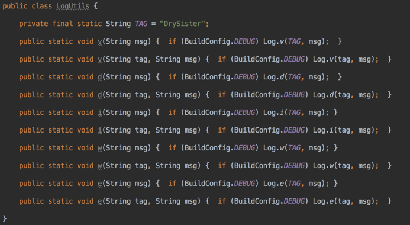
4) Write a Crash Log Collection Class
The crash log collection class depends onApplication与Thread.UncaughtExceptionHandlerimplementation~ When the program is because ofuncaught exceptionWhen it is about to terminate and exit, it will use Thread.UncaughtExceptionHandler to query the thread that has an UncaughtExceptionHandler, and callthe uncaughtException method, passing the thread and the exception as parameters. If the threadhas not explicitly set an UncaughtExceptionHandler, then it will use itThreadGroupas its UncaughtExceptionHandler, and then hand it to the default uncaught exception handler for processing. So we only need toimplement the UncaughtExceptionHandler interface, overridethe uncaughtException methodto implement our custom handling. Let's first sort out the logic checklist:
- 1.Create a folder specifically for log files: need to check whether the storage card is available, then check whether the folder exists, and create it if it does not exist;
- 2. Need a method to write a string to a file
- 3.The composition of the crash log content: current time, app version, device info, crash log
- 4. Get the system default UncaughtException handler, then check whether it is null; if not null, set it as a custom UncaughtException. Here we use a singleton
- 5. Finally, restart the app; set it to restart after 1 second;
The general logic is as above. Let's go through it step by step, starting with steps 1 and 2:
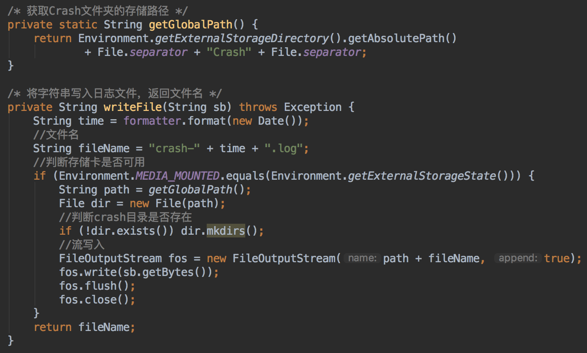
Next is the crash log, which consists of several parts: first the current time
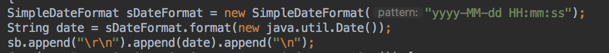
Then the app version and device info. Here we use a HashMap to store them:
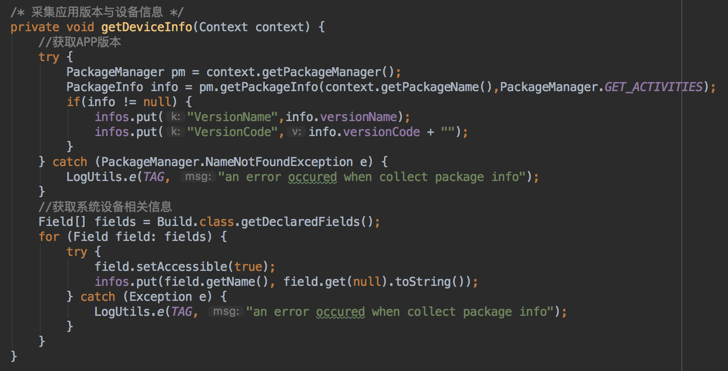
Then the exception info. This is simple: just pass the exception object and call printStackTrace. Finally combine them together as:

Writing to the file is also solved. Next is the custom UncaughtExceptionHandler singleton, and obtaining the default UncaughtExceptionHandler handler, setting it to the custom UncaughtExceptionHandler, and also needing to override the uncaughtException method
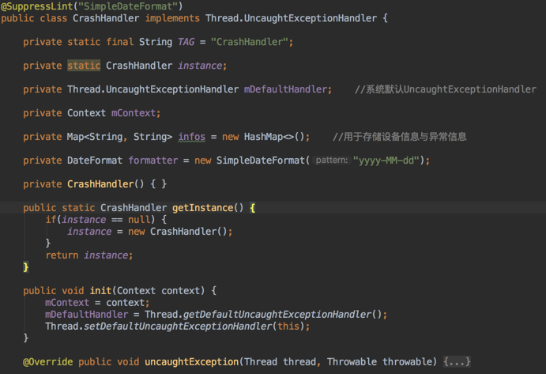
Next, we put the entire set of handling exceptions into a method. When an exception occurs, pop up a Toast to tell the user the app is about to restart, and also call the method to write the log:

Then in the overridden uncaughtException method, make a judgment: whether the exception has been handled by custom handling, and whether the default UncaughtExceptionHandler is null, that is:Has the exception been handled? If not handled, hand it to the custom UncaughtExceptionHandler; if handled, restart the app.

Finally, add the relevant code for restarting the app, and it's done:
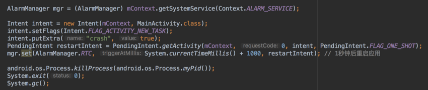
At this point, our crash log collection utility class is fully written. To enable it, you need to add the following in the onCreate() method of DrySisterApp.java:

After finishing, testing whether it works is very simple: just manually trigger a crash. For example, I do a division by zero operation in the next step button:
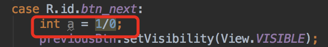
After running the app, click "Next", it crashes immediately. Open the built-in storage root directory and see if there is a Crash folder. If you open it and see our log file, it means success:


Done here. Merge the branch into develop, then push it to the remote repository:
git add . git commit -m "add LogUtils and CrashHandler" git checkout develop # 切换到develop分支 git rebase bug_log_catch # 合并分支 git push origin develop # 推送develop到远程分支 git branch -d bug_log_catch # 删除合并后的本地分支
5. Summary
This section first reviewed the code written earlier, then made small adjustments due to switching to AS 3.0. Finally, we also wrote a log utility class and a crash log collection utility class. Small as a sparrow, yet fully equipped. Although it is just a small image display app, it covers most of the introductory knowledge. The next section is the final part of the first version:signing and packaging，obfuscation, and publishing toCoolapk Market! Stay tuned~
Code download：
https://github.com/coder-pig/DrySister/tree/developWelcome to follow and star. If you think of anything to add, feel free to submit an issue!